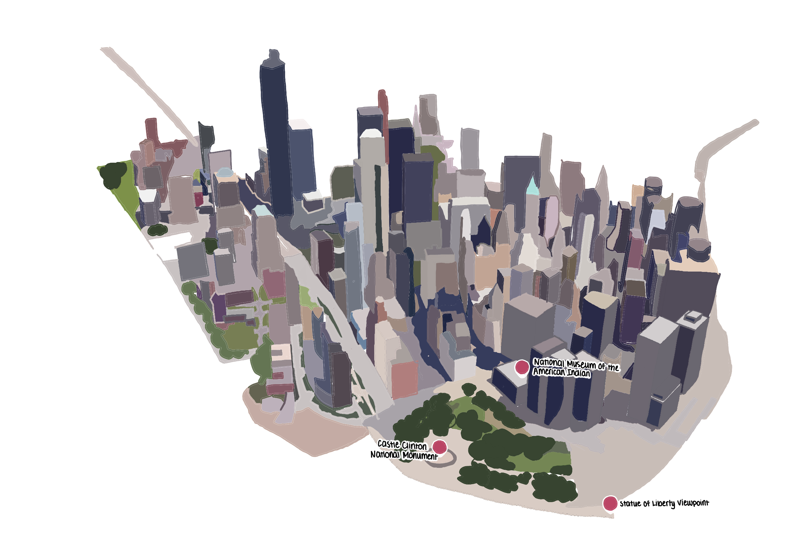
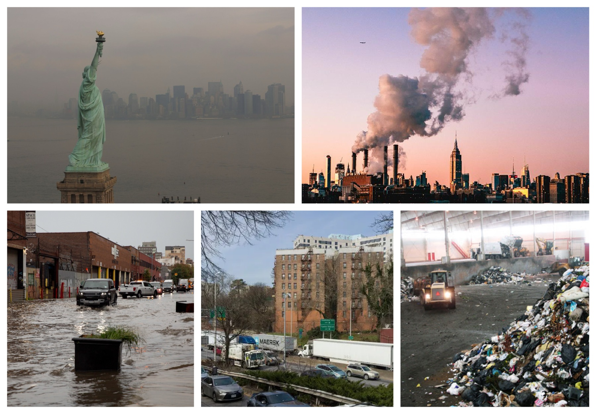

A Visual Look at Sustainability
Click the buttons to learn more
Manhattan's future relies on sustainable development to combat climate change, improve quality of life, and preserve resources for future generations. As a global center, Manhattan's environmental policies influence economies worldwide.
Click the buttons to learn more